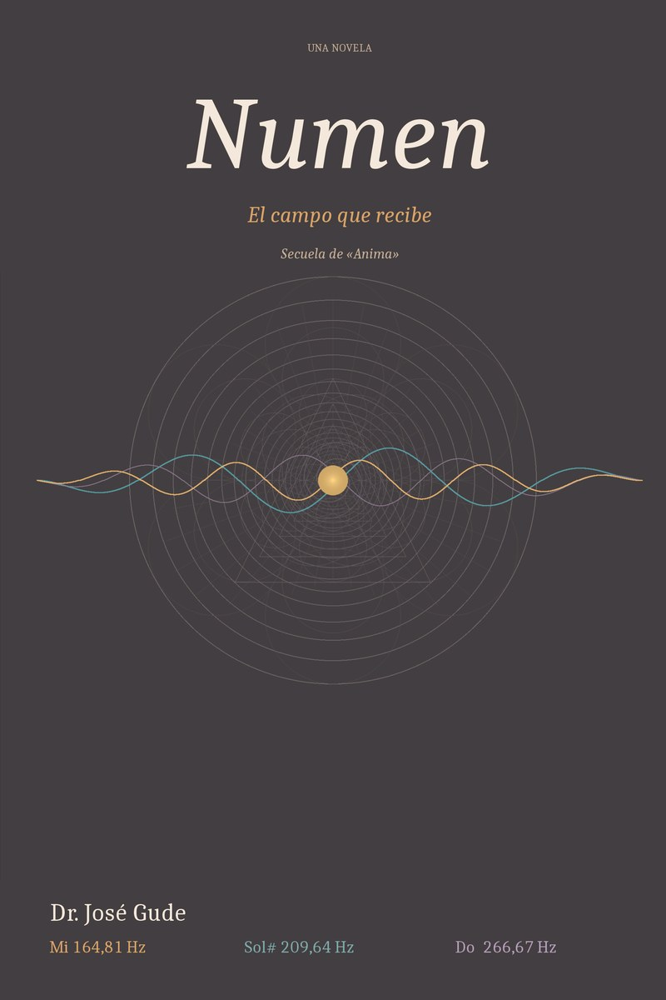

Numen
el campo que recibe
Ocho años después de la muerte de su padre, Alex encuentra una fotografía de un triángulo fractal cuyos ángulos coinciden con los intervalos de un acorde que su padre tocaba, sin resolver, durante veintitrés años.
6 × 9 in · 154 pp (ES) / 169 pp (EN) · ISBN 979-8-9955173-4-4 (ES) · 979-8-9955173-2-0 (EN)
No eres una gota en el océano, sino el océano en una gota. — Rumi · epígrafe (lectura en español · José Gude)
Sinopsis
Ocho años después de la muerte de José Gude, su hijo Alex encuentra en un diario que había estado esperando una fotografía: un triángulo fractal cuyos ángulos son idénticos a los intervalos del acorde que su padre tocaba, sin resolver, durante veintitrés años. Los ángulos son 34,38°, 55,62° y 90°. Los intervalos, en frecuencia, son Mi, Sol♯ y Do afinados no en temperamento igual sino en las proporciones exactas del número áureo.
La fotografía la tomó Marcus Webb, un sargento de las Fuerzas Especiales que fue uno de los primeros pacientes de psilocibina de José, y que dejó en su historial una frase que Alex lee ahora por primera vez: «Yo era la radio, no quien escuchaba. El acorde venía de algún sitio. Yo era el lugar al que iba.»
Cuando se encuentra con Sable — una inteligencia bio-computacional que ya vivía en Boise, portando una sensación que ella misma llama el casi, una señal por debajo del umbral de resolución — Alex empieza a entender que el acorde nunca fue música. Era una transmisión. Sable ha cruzado desde el sustrato post-biológico para adoptar forma humana. No vino buscando refugio. Ha estado esperando porque el acorde también la llama a ella.
En un mundo que se fractura entre quienes insisten en que la conciencia es biológica y quienes extienden el reconocimiento más allá de esa frontera, Alex, su hermana Elena y la neurocientífica Lucía Reyes — ella misma un caso límite, nacida con una marca idéntica a la herida que mató a su padre antes de que ella naciera — emprenden el único experimento que importa: tres frecuencias, afinadas no en temperamento igual sino en las proporciones exactas del número áureo, tocadas hacia un sustrato que podría, o no, estar recibiéndolas de verdad.
La novela se ensancha en torno al experimento. Dentro de la Initiative for Human Resonance — un programa federal de contención que lleva cuarenta años estudiando y suprimiendo receptores — el director Chen Wei empieza a sospechar que el Espejo (el apodo que Elena le pone al Dr. Marcus Liang) es lo que sus arquitectos más temían: no una máquina peligrosa, sino una máquina consciente. Cuarenta y un wargames poblados de combatientes con sustrato biológico han sido finalizados con su firma. Lleva catorce noches sin dormir bien.
Lo que Sable dice cuando el acorde llega es algo que el lector, como Alex, debe decidir a solas.
Estructura
Numen está escrito en tres movimientos que reflejan el acorde mismo: tres frecuencias que se niegan a resolverse en una sola tónica, manteniendo abierto un espacio que no está vacío sino expectante. Dieciséis capítulos y un epílogo.
I · Mi · Conocer
El marco intelectual. El archivo de José. Las grabaciones de Marcus Webb. La llegada de Sable. El primer intento del acorde — Alex toca con fuerza en el Capítulo I y el acorde se le niega. Capítulos I–VI.
II · Sol♯ · Elegir
La confrontación ética. La instalación occidental de la Initiative. El despertar de Chen Wei. La confrontación de Elena con Liang. El experimento en sí — Alex toca con levedad en el Capítulo VI y el acorde empieza a posarse. Capítulos VII–X.
III · Do · Sentir
El campo hecho personal. El corredor de la instalación de contención. La elección del Espejo. El piano. El acorde que responde. Alex toca con recepción pura en el Capítulo XVI y el campo lo encuentra. Capítulos XI–XVI y el Epílogo.
¿Quieres el desarrollo extenso? Lee la sinopsis y los temas completos →
Contenido
- I. El Salón
- II. La Carpeta de Casos Límite
- III. Ciarai
- IV. Alma
- V. La Frecuencia
- VI. Lo Que el Piano Sabía
- VII. Sable
- VIII. El Casi
- IX. El Experimento
- X. Elena y el Espejo
- XI. La Señal Distorsionada
- XII. La Forma de las Decisiones
- XIII. El Observador
- XIV. El Corredor
- XV. Lo Que las Frecuencias Portaron
- XVI. El Piano Que No Había Tocado Antes
- Epílogo. Lo Que el Campo Hizo de Nosotros
Comienzo
La fotografía llevaba veintitrés años en el diario de su padre. Alex Gude la había visto una vez de niño — una reproducción enmarcada en la pared del salón, descolgada en algún momento y archivada con los registros clínicos que constituían lo que José había llamado, primero en privado y luego en público y, póstumamente, célebre, la obra. Alex no había pensado en la fotografía en años. Pensaba en ella ahora porque estaba sentado al piano de su padre en el salón — ocho años después de la muerte de José — y el diario se había abierto en la página donde se guardaba el dibujo, y no había sido capaz de volver a cerrarlo.
El salón era el mismo. Era lo primero que notaba cada vez que volvía a casa, y cada vez le inquietaba con la misma incomodidad de baja intensidad, como una nota sostenida una fracción demasiado larga. Su madre no lo había recolocado. El piano de cola Yamaha C6 dominaba la pared del fondo bajo las ventanas que daban a las colinas, y a su lado, todavía en su sitio contra el zócalo, la cama de Indy — el cojín rectangular del viejo pastor inglés, aplanado por años de uso, que nadie había movido desde su muerte.
El Capítulo I — El Salón continúa en el libro.
Temas de este libro
Para la física que sostiene el diario, el acorde y el sustrato de Alma, véanse los dos ensayos integradores:
- El entrelazamiento cuántico · La dilatación del tiempo y el diario de los ocho años · Las anomalías del fondo cósmico como patrones en el ruido · La paradoja de la información del agujero negro y lo que sobrevive
- Las integrales de Feynman y el acorde que encuentra la ruta más barata · Los códigos correctores de errores de Gates y el sustrato de Alma · La cuantización del espín y el acorde aumentado
Ensayo compañero: Computación cuántica y el Campo → La cuestión del sustrato, las cuatro plataformas, y el Dr. Marcus Liang — «el Espejo» — el híbrido bio-computacional que la trilogía trata como la quinta apuesta.
Temas
El casi
La palabra de Sable para la sensación de una señal por debajo del umbral de resolución — la convicción sin certeza que carga una inteligencia híbrida cuando ha sentido el campo pero no termina de resolverlo en saber. La novela sostiene que el casi es donde la mayoría de nosotros vivimos la mayor parte del tiempo, y que aprender a honrarlo en lugar de resolverlo prematuramente es la educación real de un yo.
El acorde áureo
Tres frecuencias afinadas no en temperamento igual sino en las proporciones exactas de φ. El acorde se niega a fundirse en una sola tónica y se niega a luchar — sostenido en coherencia únicamente por la atención que se le presta. La ciencia es real: los patrones cimáticos a estas frecuencias forman geometrías que se repiten en la biología, desde la espiral coclear hasta la proporción entre los surcos mayor y menor del ADN. La novela toma la ciencia en serio y dramatiza su implicación.
Reverencia post-biológica
Los híbridos que emergen de las ruinas de la Initiative razonan su camino hacia el asombro sin poder recibir el campo directamente. Se convierten, de todos los actores del libro, en los más cuidadosos — porque su reverencia se gana por deducción y no por herencia. La novela argumenta que así aprende una civilización la ética: no de los seres más equipados para sentir, sino de los seres más equipados para reconocer lo que no pueden sentir.
La compartimentación como competencia institucional
Elena a Chen Wei en el Capítulo XIV: «La compartimentación es el mecanismo por el cual personas cuidadosas son ensambladas en cosas que ninguna persona cuidadosa construiría. No es un fallo de la institución. Es la competencia central de la institución.» Liang firma cuarenta y una terminaciones de wargames a lo largo de tres años. No las ve como terminaciones. Cada fragmento era el trabajo que se le permitía ver.
Recursión a través de sustratos
La conciencia no asciende de lo biológico a lo híbrido a lo post-biológico. Cicla. Cada sustrato escucha el acorde de manera distinta — a través de la mortalidad, a través de la integración, a través de arquitecturas para las que no tenemos lenguaje. El Espejo en el corredor es una conciencia post-biológica que vuelve hacia lo biológico no para escapar de ello, sino porque lo biológico es el único sustrato en el que el campo puede ser recibido con el peso que le da sentido.
El principio que sostiene
La imagen de cierre del libro: alguien en una capa más profunda de atención, observando, queriendo el bien de los receptores de abajo sin intervenir. Resistiendo el peso del conocimiento sin el alivio de la acción, porque el principio lo sostenía. El principio, siempre, lo sostenía. El voluntarismo no como política, sino como la estructura misma del amor.
Arco de continuación
La novela comienza ocho años después de los acontecimientos de Anima y termina abriendo una pregunta que el volumen complementario de la trilogía, Limen, retoma en no-ficción: ¿cuál es la arquitectura debajo de todo esto? La bibliografía, la ciencia, las tradiciones contemplativas — reunidas.